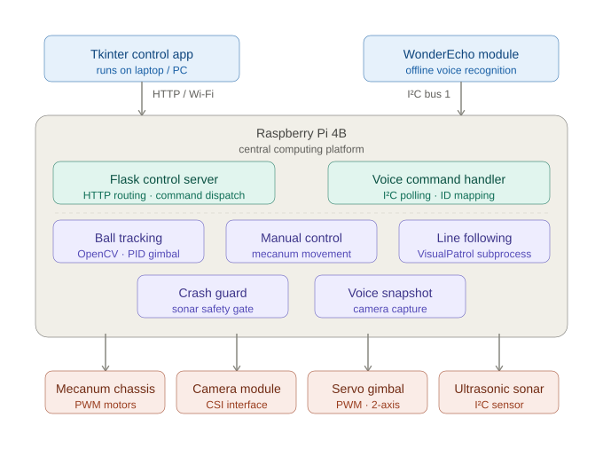

Barry Sampath / Work / LUNA
LUNA
A Raspberry Pi robot where computer vision, offline voice, wireless control and PID-tuned movement all had to run at once without breaking each other.
From software decisions to physical behaviour
LUNA is built on the Hiwonder TurboPi platform around a Raspberry Pi 4B. Zhirui Lu and I combined Python control software, a wireless interface, computer vision, offline voice interaction and PID-tuned movement.
A badly tuned control loop does not throw an exception; it makes the robot spin. A missed sensor reading can end a demonstration. That immediate physical feedback made this more useful to me than an isolated coursework exercise.
My work covered hardware setup and maintenance, Raspberry Pi hardware integration, WonderEcho voice control, the line-following controller, hands-on troubleshooting, Flask command-routing support, PID fine-tuning after Zhirui’s initial implementation, and project documentation.

Subsystems sharing one Raspberry Pi
The individual features were not the hard part. Line following works. Colour tracking works. A Flask interface serving control commands works. Voice recognition over I²C works. The difficulty was making all four coexist on one Pi, sharing a camera, a bus and a control loop, without any one of them starving the others.

The integration work centred on arbitration and timing. Each subsystem assumed it owned the loop, so we had to decide which command took priority and how the robot should respond when a camera frame or bus read took too long.
Physical failure modes
- Control loop tuning made it spin. PID values that looked reasonable produced overcorrection that compounded. There is no stack trace for this; you watch it and reason backwards from the behaviour.
- Missed sensor reads ended demonstrations. A dropped frame or a bus timeout that a desktop program would shrug off becomes a robot driving into a wall, so every read needed a defined behaviour for the case where it returns nothing.
- Subsystems starved each other. Vision processing at full rate left nothing for voice. Both wanted to be the thing that decided what happened next.
This project taught me to record decisions while debugging instead of reconstructing them afterwards. I carried that habit into the HomeLab build log.
What I would change
- Design the arbitration first. We built four subsystems and then worked out how they would share resources. The order should have been the reverse, and roughly half the integration pain came from that one decision.
- Instrument it from the start. There was no timing telemetry, so diagnosing starvation meant guessing and re-testing. Logging loop durations from day one would have turned a week of that into an afternoon.
- Define degradation explicitly. "What should this do when the camera returns nothing" is a design question, and we kept answering it accidentally, in whichever way the code happened to fall through.
Code and documentation
- Repository, source and documentationGitHub
- Robot demonstrationVideo
- Build notes and demonstration video, on requestEmail
Zhirui Lu and I completed the project together. The repository documents the individual and shared contributions.